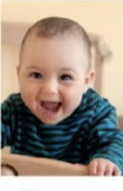
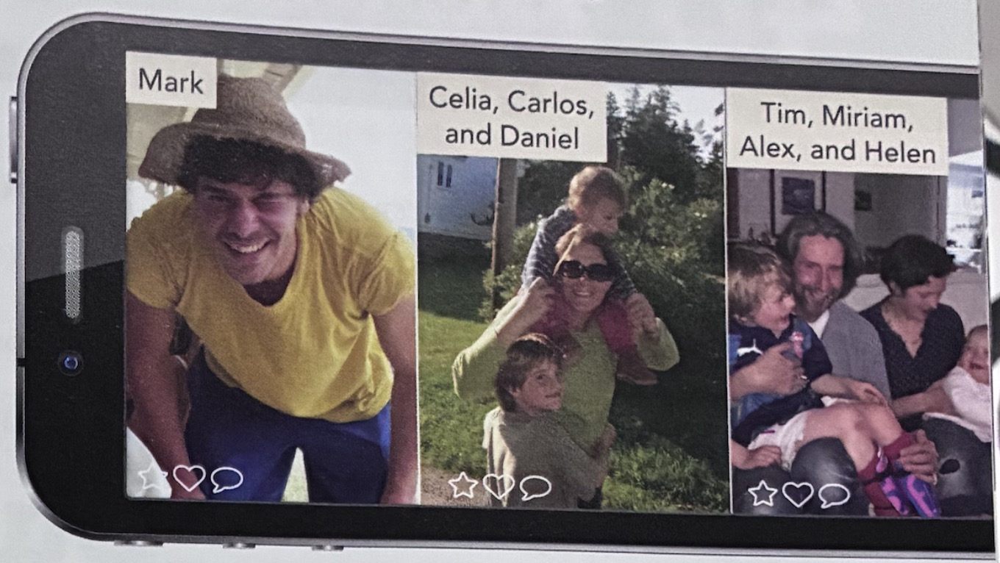

We use a person + 's to talk about family and possessions.
He's Brad Pitt's brother. NOT He's the brother of Brad Pitt.
LESSON 5
Asking about habits, places and daily life
Warm up: What do you do every day?
get up • go • work • study • relax • sleep
What time do you start?
Where does she work?
Do they watch TV?
Lesson 5
By the end of this lesson, you can...
Lesson 5
Listen to the examples, then notice the rules.
We use a person + 's to talk about family and possessions.
He's Brad Pitt's brother. NOT He's the brother of Brad Pitt.
With regular plural nouns we put the apostrophe after the s.
It's my parents' car. NOT It's my parent's car.
We use Whose...? to ask about possessions.
We can ask Whose is this bag? OR Whose bag is this?
We can answer It's Maria's bag. OR It's Maria's.
We don't usually use a thing + 's, e.g. the end of the class.
NOT the class's end, the city centre NOT the city's centre
Lesson 5
Talking about possession and relationships
One Person → 's
PERSON + 'S + THING / PERSON
Laura has a brother.↓Laura's brother
The laptop belongs to Thomas.↓Thomas's laptop
Examples: Laura's brother | Thomas's laptop | my sister's husband
PossessionThomas's laptop
RelationshipLaura's brother
Use 's after a person to show possession or a relationship.
More Than One Person
Regular plural ending in -s
my parents↓my parents' house
Regular plural ending in -s
my friends↓my friends' office
Irregular plural
children↓the children's room
plural + S → apostrophe AFTER the S
parents → parents'
No final plural -s → use 's
children → children's
One personmy sister's car
Regular pluralmy parents' car
Irregular pluralthe children's room
Ask About The Owner
Whose bag is this?↓It's Maria's bag.
Whose bag is this?↓It's Maria's.
When the thing is already clear, we don't need to repeat it.
Whose bag is this?It's Maria's.
Whose glasses are these?They're Thomas's.
Who's ≠ Whose
WHO'S and WHOSE sound the same. The meaning is different.
WHO'SWHO IS → person / identity
WHOSEpossession → owner
Quick Check
Item 1 / 5
Maria has a brother.
Say it with 's.
Maria's brother.
Lesson 5
Look at the two family trees. Number the people in relation to Richard.

4.03 Listen and check your answers
Lesson 5
Read the clues, discuss the relationship, and say the complete answer aloud before revealing it.
Students take turns reading the clues and answering with a full sentence. Alternate roles each round.
Discuss first. Then check your sentence.
Lesson 5
Use family words to solve the questions, then listen to Grace talking about the people in her photos.
Individual Work
Complete each answer with the correct family word.
Listening & Speaking

4.06 Listen
a. Who are Mark, Celia, and Miriam? Complete the first row. b. Listen again and write more information, e.g. ages, jobs, or where they live.
| Mark | Celia | Miriam | |
|---|---|---|---|
| Grace's... | |||
| More information |
Lesson 5 · Pair Work
A few personal objects are waiting in Lost & Found. Read the clues, solve the mystery, then ask and answer in complete sentences.
Pair Work · Solve Together
Lesson 5 · Vocabulary Bank
Match the verb phrases and pictures. Then listen and check your answers.
Match
Lesson 5 · Pair Work
Choose your real routine, tell your partner about it, and keep the conversation going with questions.
1 · Prepare Your Day
7:00 — get up
7:30 — have breakfast
8:00 — go to work
Now build YOUR day. Think about your usual times.
2 · Talk To Your Partner
DON'T JUST LISTEN — ASK AT LEAST 3 QUESTIONS!
Tell Student B about your day.
I get up at 7:00. Then I have a shower and get dressed.
Listen. Ask at least 3 questions.
What time do you start work?
Where do you have lunch?
SWITCH ROLES · Student B describes their day. Student A asks questions.
What time do you get up?
What time do you start / finish work?
What time do you go to bed?
Do you have breakfast at home?
Do you have lunch at work?
Do you cook dinner?
Where do you work?
Where do you have lunch?
Where do you have dinner?
What do you have for breakfast?
What do you do after work?
Who do you have lunch with?
We have coffee in the morning. · We both start work at 9:00.
Lesson 5 · Reading, Listening & Grammar
Read about Marjan, complete Darius's day, and check prepositions of time and place.
Reading & Listening
Marjan Jahangiri, originally from Iran, is one of the only women professors of cardiac surgery in Europe. She does more than 300 operations a year. She lives in London with her husband and their 17-year-old son, Darius.
I get up between 6.00 and 6.30 a.m., I get to work at 7.00, and my meetings usually start at 7.30. After that, I don't have a break. I have lunch at my desk. I often do two operations a day, and I also have lectures and more meetings. At home, I have dinner with my son. Between 9.30 and 11.30 p.m., I do research and I watch the news on TV. One or two nights a week I'm on call, so I probably need to do operations during the night. I often work at weekends, too. But that's OK - I think I have a fantastic life because I love my work.
I spend a lot of time with my son. I want him to learn about hard work and good values, and I want to be an example for him. My husband is away a lot, but we speak on the phone every day. I think one reason why I am successful in my professional life is because he isn't at home all the time!
I play the piano for an hour every day, late at night. I think it helps me with my operations - it's technical in the same way. I also go to the hairdresser twice a week. I do a lot of my research there! They turn the music off for me and I use the time to read all my academic papers.
Adapted from the British press
In Pairs
Listening
He gets up. He has breakfast and then he goes to school by Tube.
2 He to school.
Lessons start. 3 He has or lessons before lunch.
He has lunch at 4 .
He starts lessons again.
He finishes school. He doesn't 6 then. He studies in the library or plays music. On Tuesdays, he 7 in the school choir and on 8 he 9 percussion in the school orchestra.
He gets home. 10 He a and then has dinner. After dinner, he does homework for 11 or hours.
He goes to bed.
What do Marjan and Darius have in common? Who do you think is more tired in the evening?
Grammar
Look at some sentences from Darius's day. Complete them with at, in, on, or to.
the morning
the afternoon
the evening
the summer
December
2018
Monday (morning)
1 January
three o'clock
midday / midnight
lunchtime
night
the weekend
Christmas
1 He has lunch at work.
He works in an office.
2 He goes to work at 8.00.
On Saturdays he usually has lunch in / at a restaurant.
She goes to the gym. NOT She goes at the gym.
We don't use to before home.
go home NOT go to home
Lesson 5 · Grammar Consolidation
Time, place and movement
TIME
ON Friday morning
IN the morning
PLACE
Laura is at work.
Laura is in her office.
Thomas is at school.
Thomas is in a classroom.
MOVEMENT
GO + TO + PLACE
go to work
go to school
go to the office
BUT...
go homego to home
I go TO work at 8:00. I go HOME at 5:30.
Lesson 5 · Language Focus
How often do we do things?
Match
Read
Teenagers in trouble
American teenagers may, for the first time in the nation's history, live shorter lives than their parents because of their unhealthy lifestyles.
According to recent research:
Are teenagers in your country similar? Discuss with a partner.
Position
1. Adverbs of frequency (e.g. usually) go:
2. Expressions of frequency (e.g. every week) go:
Lesson 5 · Grammar Consolidation
Adverbs and expressions of frequency
These words describe general frequency. They do not give an exact number.
ADVERB + VERB
I usually work from home.
She often drinks coffee.
They sometimes have lunch together.
BE + ADVERB
I am usually tired.
She is often busy.
They are never late.
She often works from home.
She is often at home.
× She usually is busy.
✓ She is usually busy.
× She works usually from home.
✓ She usually works from home.
once = 1 time
twice = 2 times
three times = 3 times
After 2: number + TIMES
I go to the gym twice a week.
She calls her parents every day.
We work from home three times a week.
How frequently? Use familiar Present Simple questions to ask about frequency.
How often do you work from home?
How often do you go to the gym?
How often does Laura call her parents?
I usually work from home twice a week.
I go to the gym three times a week.
She calls them every day.
I usually work from home.
I work from home twice a week.
Item 1 of 6
Put USUALLY in the correct position: I work from home.
I usually work from home.
always → usually → often → sometimes → hardly ever → never
General frequency
Other verbs: adverb + verb
I usually work.
Be: be + adverb
I am usually busy.
every day
once a week
twice a week
three times a month
How often do you...?
Lesson 5 · Grammar Reference
Listen
I always watch TV in the evening.
Do you usually sleep eight hours a day?
She sometimes does sport.
She doesn't often go to bed late.
They're hardly ever late.
He isn't often stressed.
Are you usually in this classroom?
I have English classes twice a week.
She doesn't work every day.
Grammar
We use adverbs and expressions of frequency to say how often you do something.
How often do you cook? I cook every evening.
Adverbs of frequency go after be in positive and negative sentences.
In questions with be, the adverb of frequency goes after the subject.
Expressions of frequency usually go at the end of a sentence or verb phrase.
Lesson 5 · Video Listening
Watch the documentary. Mark each sentence true or false, then correct the false sentences.
Watch once for the main ideas. Watch again to check the details.
Activity A
When you finish Activity A, continue with the corrections.
The island of Okinawa
Okinawa is an island about four hundred miles south of Japan. It's a beautiful island, with wonderful beaches and clear blue water. It also has more centenarians - people who are a hundred years old or more - than anywhere else in the world. What's more, they seem to age more slowly than other people. According to scientists, people there who are actually seventy often have the bodies of fifty-year-olds. Many of them are very healthy all through their lives.
What's their secret? Most people think it's because of their healthy lifestyle. They don't have big meals - they have a cultural habit called hara hachi bu, which means they always stop eating before they're full. They usually just have fish and vegetables, especially sweet potatoes, and they eat a lot of seaweed, which is one of the healthiest foods there is.
But diet isn't the only reason why they live so long. The Okinawans are very active, and they often work in their gardens until they're eighty or more. Many of them also do t'ai chi or martial arts, every day. They have a good social life. They visit friends or family, and a lot of them belong to community centres. Some play the traditional Okinawan guitar, an instrument similar to a banjo.
The old people of Okinawa are very positive and happy with their lives. They aren't stressed, because they're never in a hurry. Their spiritual lives are important to them, especially the women, and many of them meditate every day.
In Okinawa, people say you're a child until you are fifty-five. And when you reach ninety-seven, your local town holds a special ceremony called kajimaya to celebrate the fact that now it's time to be young again, to be free of all responsibilities and to simply enjoy life.
Lesson 5
Family, routines, frequency, and everyday English practice
40 exercises + writing project
Open the homework in a new browser tab. Your answers are saved in this browser, so you can complete it in more than one session.
Open Homework